Menu: Controle da Qualidade › Solicitação de Análise › Programação de Amostragem (o título da tela é "PROGRAMAÇÃO DE AMOSTRAGEM") · Situação do manual: testado parcialmente em 20/11/2026 (robô CQ-A, 22 prints) · Situação da tela: real, testada parcialmente: a programação não grava (DV-CQ-N-042) · Fonte dos prints: versão nova.
Testado parcialmente em 20/11/2026 pela pista CQ-A (conta de administrador, 22 prints
PNC1). Confirmado na tela: filtros, paginação, quadro "Urgentes!" com a solicitação priorizada, formulário, as três recusas, busca do item, formulário de ambiente. Não foi possível: programar e gravar, porque o campo Responsável não oferece nenhum nome (DV-CQ-N-042); por isso também não se testou só a função de amostrador (34), a data anterior à de hoje, programar duas vezes (DV-CQ-010), cancelar nem o perfil restrito (pista CQ-C). O que ainda vem do manual do legado vai marcado "(do legado; a confirmar na versão nova)". A solicitação usada foi a 030/26 (priorizada, ainda pendente de programação; nada foi gravado).
Como ler este manual: rota (depois do endereço do sistema): /controle-qualidade/programacao-amostragem. Entrada de menu "PROGRAMAÇÃO DE AMOSTRAGEM", número 17 do levantamento (execucao/2026-11-20-levantamento-menu-cq/menu.csv). Fonte dos testes: execucao/2026-11-20-pista-cq-a/observacoes.md. Ao sair da tela e voltar pelo menu, os filtros ficam guardados: clique em LIMPAR antes de um novo caso.
Para que serve
Na versão nova a tela fica no menu Solicitação de Análise. Em 11/11/2026 ela aparecia como provisória; em 20/11/2026 abre como tela real, lista e filtra, mas não consegue programar porque o Responsável não aparece (DV-CQ-N-042).
Como era no legado (do legado; a confirmar na versão nova):
A Programação de Amostragem mostra as solicitações de análise que ainda não têm coleta marcada e permite programar a amostragem de cada uma: definir a data de início e o responsável (o amostrador). Quem usa é a chefia ou o planejamento do CQ (leitura da área; o sistema não diz o dono da tela). As solicitações urgentes (marcadas na tela Priorização de Solicitação Análise) aparecem em cima, na grade "Urgentes!". Em termos da norma, é o momento em que o CQ designa quem vai coletar a amostra, que deve ser "pessoal autorizado" (RDC 658/2022, art. 14, II).
Antes de começar (o que precisa existir)
(do legado; a confirmar na versão nova) Conferir na tela antes de afirmar.
| Precisa existir | Para quê | Onde se cadastra |
|---|---|---|
| Solicitação de análise em "Coleta pendente de programação", fora da lixeira e sem nenhuma amostragem (SolicitacaoAnaliseRepository.cs:19-22 e 63-66) | É o que aparece na lista | Vem da inclusão manual (Solicitação de Análise), da agenda de água e ambiente (Programação de Solicitação de Análise), da chegada automática do Estoque ou da Produção com fase de coleta, ou da solicitação de estabilidade |
| Amostrador com a função de número 34 no cadastro de usuários | Só quem tem essa função aparece na busca do Responsável (DV-CQ-022); a função "AMOSTRADOR" (40) não vale | Principal › cadastro de usuário e de função |
| Ponto de água cadastrado (solicitação de água) | A programação de água abre e grava no ambiente desde o ajuste do DBA em 03/11/2026 (DV-CQ-008) | Principal |
| Item e, em produto/material, item de entrada (lote) | Aparecem na lista e no formulário, só para leitura | Estoque (recebimento) e cadastro de itens |
A lista abre sem linhas: é preciso escolher "Produto / Material" (marcado de início) ou "Água / Ambiente" e clicar em Pesquisar (ProgramacaoColetaIndex.js:15-19 e 228-233).
Passo a passo
- Abrir a tela. No menu Controle da Qualidade › Solicitação de Análise, clique em Programação de Amostragem. A tela abre com o título PROGRAMAÇÃO DE AMOSTRAGEM, o quadro "Pesquisa", as opções PRODUTO / MATERIAL (marcada) e ÁGUA / AMBIENTE e os campos TIPO DE ITEM (SELECIONE, Granel, Matéria-Prima, Material Embalagem, Produto Acabado, Semi-Elaborado), ITEM ANÁLISE, CÓDIGO, TIPO ANÁLISE (Físico-Químico, Microbiológica), SOLICITAÇÃO e ITEM ENTRADA. Botões: PESQUISAR e LIMPAR. A lista só aparece depois de PESQUISAR.
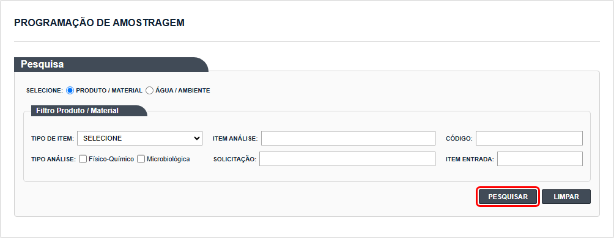
- Pesquisar sem filtro. Clique em PESQUISAR. Aparecem duas grades: Urgentes! em cima e as demais embaixo, 10 linhas por página, com setas Anterior / Próxima; na massa de 20/11/2026 a lista tem 3 páginas (o levantamento tinha visto 2). Colunas das demais: TIPO ANÁLISE, TIPO ITEM ANÁLISE, ITEM ANÁLISE (cortado, nome inteiro ao passar o mouse), SOLICITAÇÃO, ITEM ENTRADA e o lápis. Colunas de Urgentes!: as mesmas, sem ITEM ENTRADA.
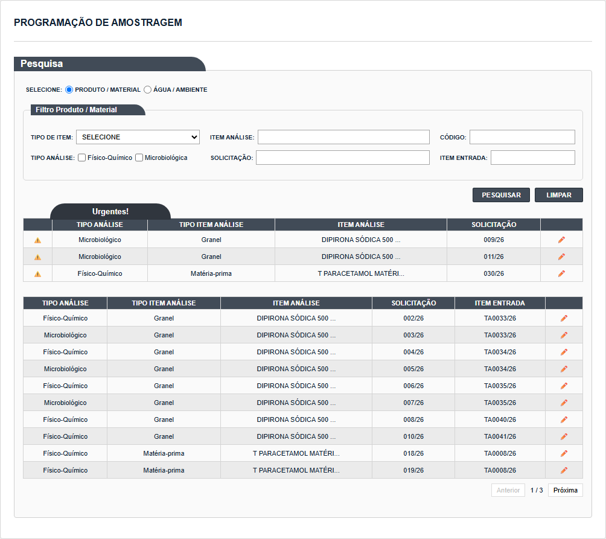
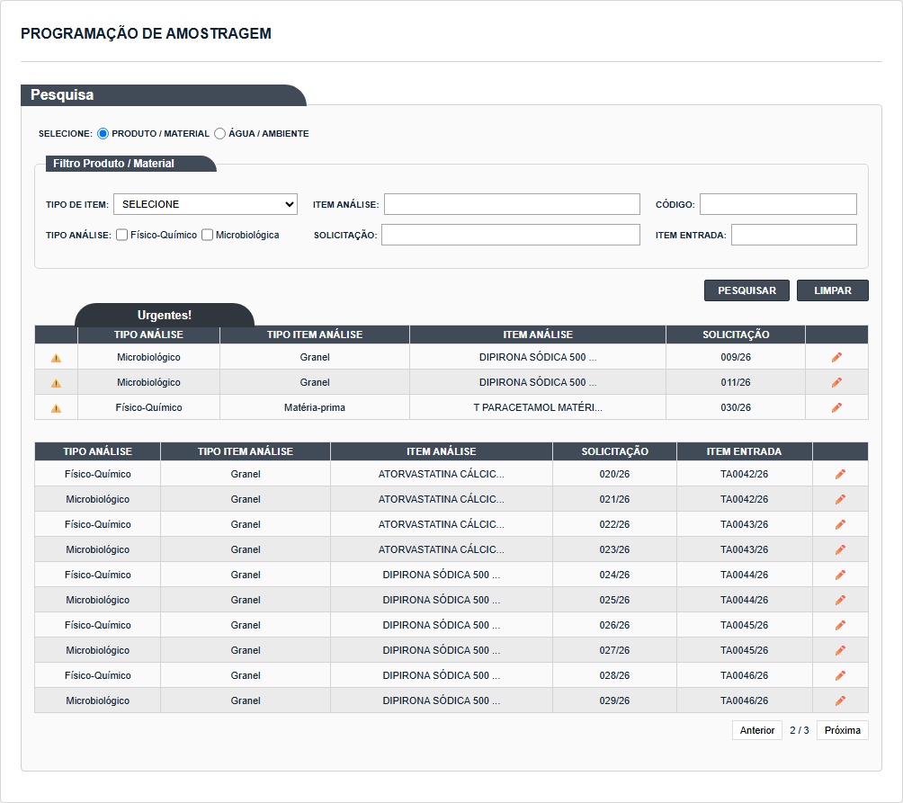
- A solicitação priorizada aparece em Urgentes! Digite 030 em SOLICITAÇÃO e pesquise: a 030/26, priorizada na tela Priorização, aparece em "Urgentes!" com o ícone de alerta (⚠), junto da 009/26 e da 011/26 (confirmado), e a grade de baixo diz "A pesquisa não retornou nenhum resultado.".
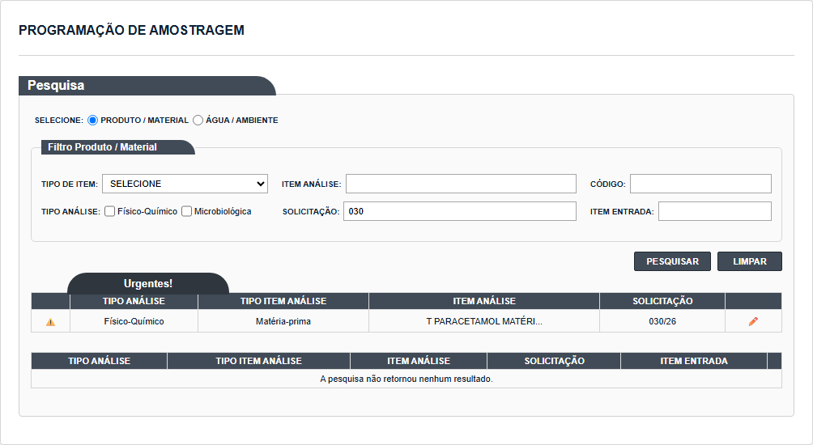
- Filtros. Todos filtram também a grade Urgentes!: Solicitação (contém o texto; 018 mostra só a grade de baixo, sem Urgentes), Item Entrada (TA0008/26), Tipo de Item (Matéria-Prima) e Tipo Análise (Microbiológica).
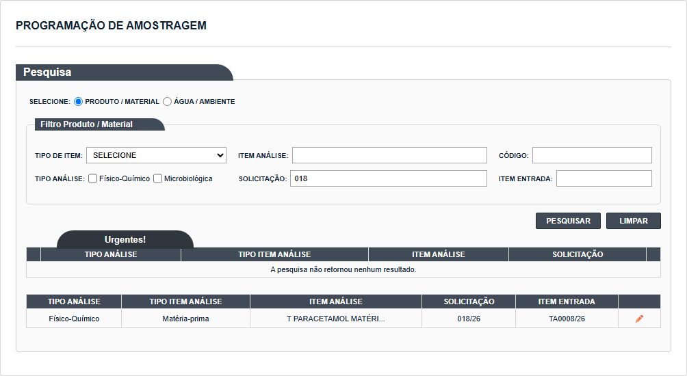
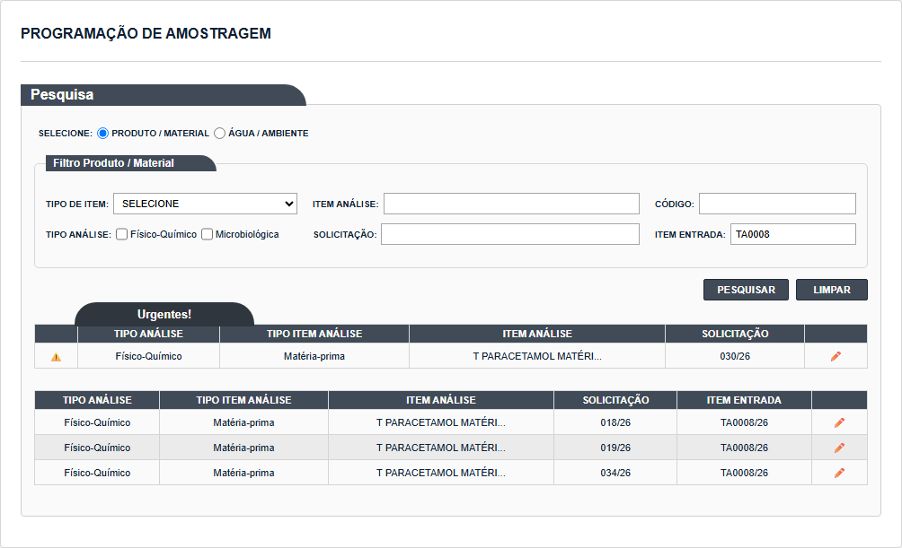
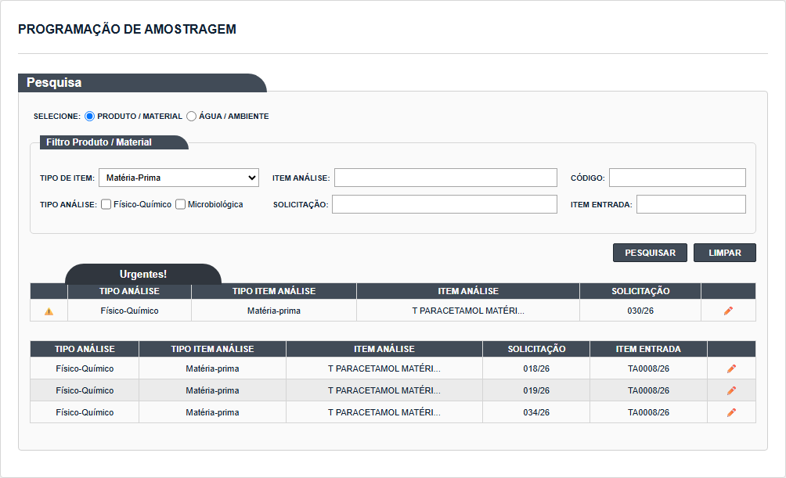
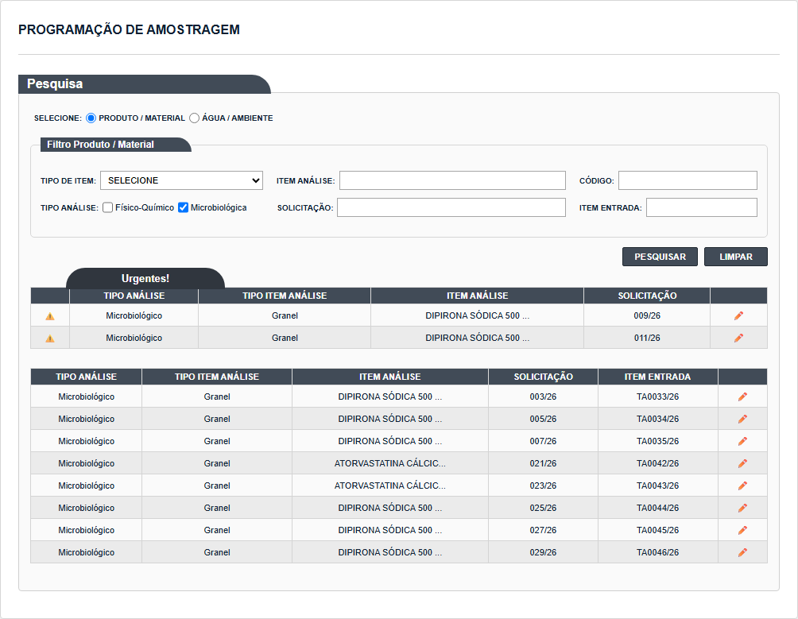
- Buscar o item. O campo Item Análise só oferece sugestões depois de escolher o Tipo de Item (sem tipo, nada aparece e nenhuma chamada sai). Com Matéria-Prima escolhida, digitar "T PAR" sugere "T.INS-001 - T PARACETAMOL MATÉRIA-PRIMA". Ao escolher o item, o Código é preenchido (T.INS-001) e, na versão nova, o campo Código está habilitado e filtra (um código inexistente como XXXX999 dá "A pesquisa não retornou nenhum resultado." nas duas grades). Pesquisar pelo item traz a 030/26 em Urgentes! e a 018/26, 019/26 e 034/26 nas demais.
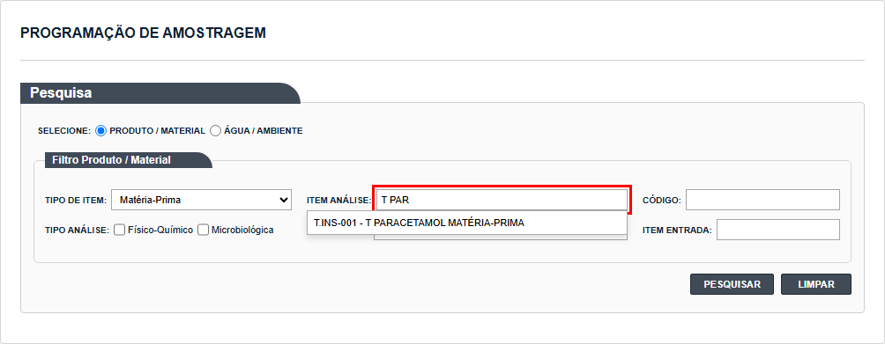
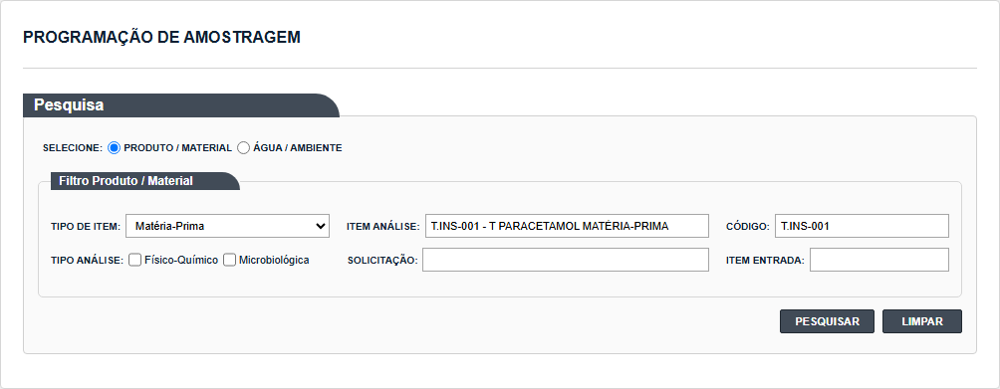
- Limpar. LIMPAR esvazia os filtros e esconde as grades.
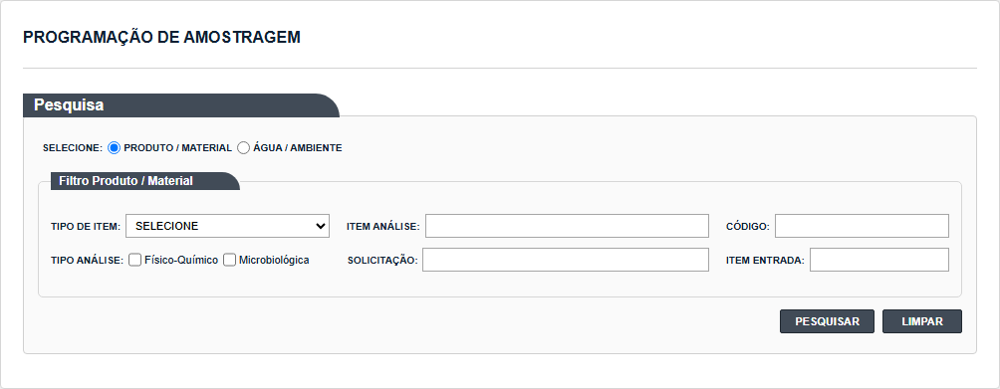
- Abrir a programação. Clique no lápis (Editar programação) da linha. Abre o formulário "Informações" com os dados da solicitação só para leitura (Item Análise, Tipo Análise, Tipo Item Análise, Etapa, Subetapa, Cod. Ambiente, Desc. Ambiente, Item Entrada, Lote, Quantidade) e dois campos para preencher: DATA INÍCIO COLETA (com calendário) e RESPONSÁVEL. Botões: SALVAR REGISTRO e VOLTAR. A linha tem só o lápis: não há ícone de cancelar (DV-CQ-040).
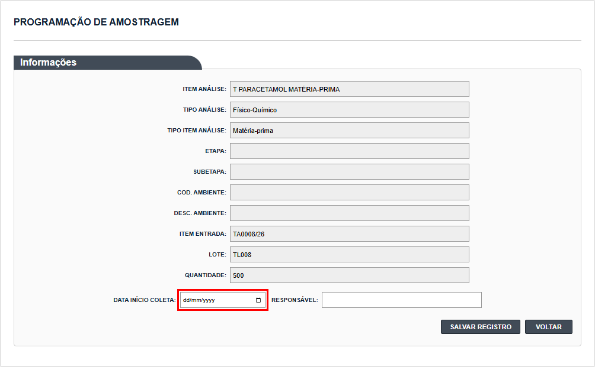
- Recusas do formulário. Clique em SALVAR REGISTRO com campos vazios ou errados e a faixa vermelha no alto diz, uma por vez: "A Data Início Coleta é obrigatória!" (data e responsável vazios, ou data vazia com responsável digitado), "O Responsável é obrigatório!" (data preenchida e responsável vazio) ou "O Responsável é inválido!" (texto digitado e não escolhido na lista). O responsável é conferido antes da data.
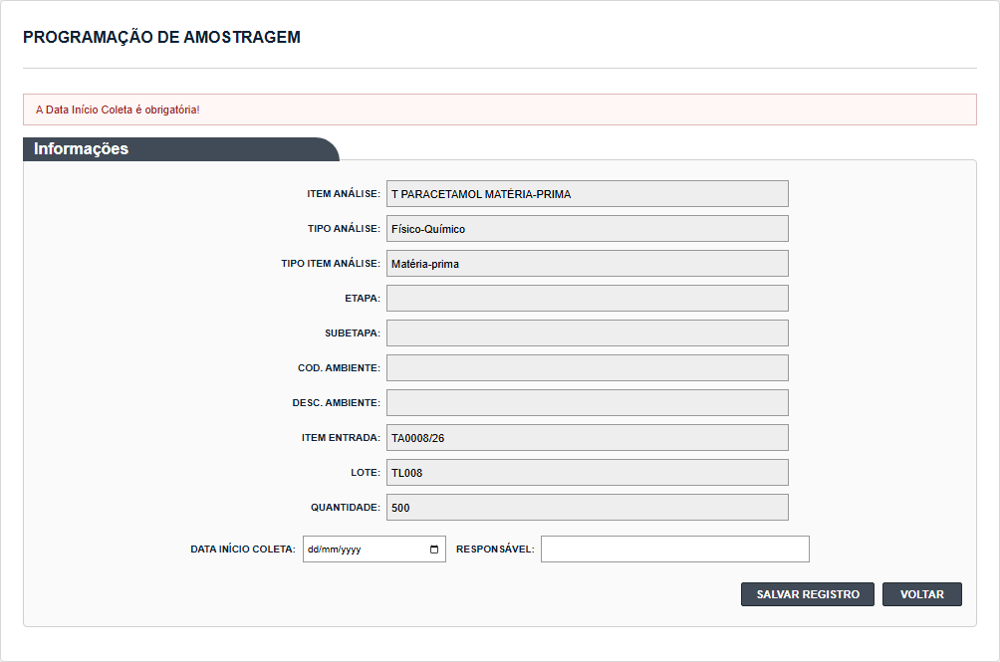
- O Responsável não oferece nenhum nome (DV-CQ-N-042). Ao digitar duas ou três letras ("Adm", "Ama", "Administrador", "Amostrador", "T. C1", "Teste", letra a letra e colando) nenhuma sugestão aparece e o navegador nem chama o servidor, enquanto no Item Análise saem chamadas a cada letra. Sem responsável escolhido da lista, nenhuma solicitação pode ser programada: não nasce amostragem pendente e a corrente do CQ para aqui.
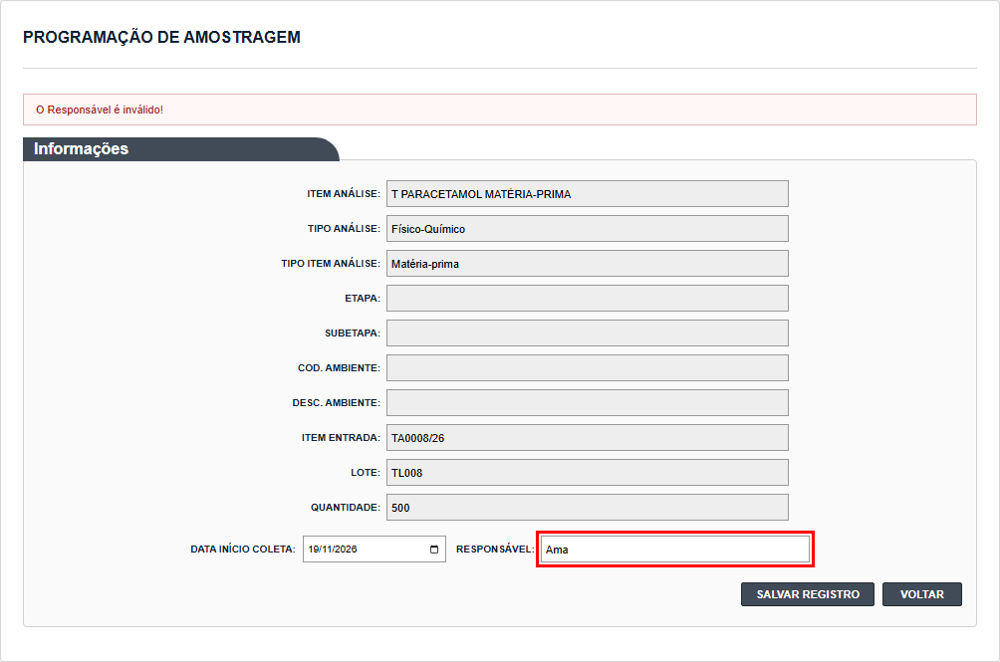
- Voltar. VOLTAR sai do formulário sem gravar e volta à lista com o filtro mantido.

- Água / Ambiente. Marque ÁGUA / AMBIENTE: os filtros são TIPO DE ITEM (Água para Injetáveis, Água Potável, Água Purificada, Ambiente), ITEM ANÁLISE, TIPO ANÁLISE e SOLICITAÇÃO. A pesquisa de Ambiente traz a solicitação 12 (máquina de raio X) e o lápis abre o formulário sem erro (DV-CQ-008 corrigido), com Cod. Ambiente 15, Desc. Ambiente "MAQUINA RAIO X - 2024" e a Data Início Coleta já preenchida pela agenda (18/11/2026, dia que já passou). Gravar não foi possível (DV-CQ-N-042).
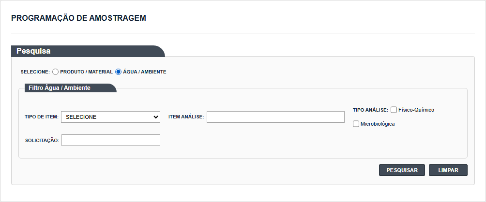
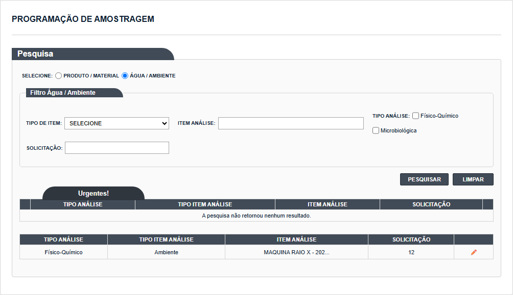
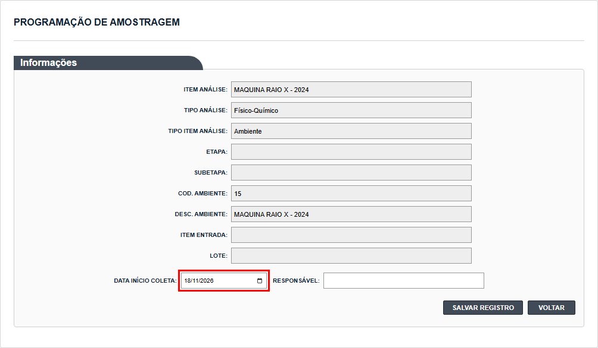
Como era no legado (do legado; a confirmar na versão nova, não executado nesta tela): informar a data (hoje ou depois) e o Responsável (3 letras, só quem tem a função 34), clicar em Salvar Registro, confirmar "Confirma a alteração do item?" e ver "Alteração efetuada com sucesso."; a solicitação saía da lista e seguia para Amostragens Pendentes.
Ícones e botões da lista
| Ícone | O que faz | Em que situação aparece |
|---|---|---|
| Lápis (Editar programação) | Abre o formulário "Informações" | Em cada linha das duas grades (prints 02 e 04) |
| Alerta (⚠) | Marca a solicitação urgente | Na grade "Urgentes!" |
| X (Cancelar) | Cancelaria a programação, com justificativa | Não aparece (DV-CQ-040 repete: não há como cancelar pela tela) |
| LOG, lixeira | — | Não são desenhados nesta lista |
Botões da tela: PESQUISAR e LIMPAR (sempre); no formulário, SALVAR REGISTRO e VOLTAR.
Botões e ações
(Campos, botões e colunas conferidos na tela em 20/11/2026; as regras de cada campo e a fonte são do código do legado.)
Quais botões cada pessoa vê depende das regras de acesso, que estão na seção de segurança.
| Botão ou ação | Quando aparece | O que faz | Para onde leva a solicitação | Fonte |
|---|---|---|---|---|
| Pesquisar | Sempre | Carrega as duas grades (urgentes e demais) | Não muda | Index.cshtml:141; ProgramacaoColetaIndex.js:228-233 |
| Limpar | Sempre | Esvazia os filtros e esconde as grades | Não muda | Index.cshtml:142; ProgramacaoColetaIndex.js:117-155 |
| Editar (lápis) | Em cada linha | Abre o formulário de programação | Não muda | _GridColetasPendentesProgramacao.cshtml:63-67 |
| Salvar Registro | No formulário | Confirma e grava a amostragem Pendente e a solicitação Em coleta | Em coleta | Edit.cshtml:117; ProgramacaoColetaEdit.js:13-45; ProgramacaoColetaController.cs:89-114 |
| Voltar | No formulário | Volta à lista | Não muda | Edit.cshtml:118; ProgramacaoColetaEdit.js:89-91 |
| Cancelar (ícone) | Não aparece (comentado) | Cancelaria a solicitação, com justificativa | Cancelada | _GridColetasPendentesProgramacao.cshtml:70-74; ProgramacaoColetaController.cs:116-149; DV-CQ-040 |
Mensagens do sistema
As marcadas "vista" aparecem nos prints de 20/11/2026.
| Mensagem | Quando aparece | Fonte |
|---|---|---|
| A Data Início Coleta é obrigatória! | Salvar sem data (vista, prints 12 e 15) | Código da tela; ProgramacaoColetaEdit.js:59 (legado) |
| O Responsável é obrigatório! | Data preenchida e responsável vazio (vista, print 13) | ProgramacaoColetaEdit.js:65 |
| O Responsável é inválido! | Texto digitado e não escolhido da lista (vista, print 14) | ProgramacaoColetaEdit.js:68 |
| A pesquisa não retornou nenhum resultado. | Grade sem linhas, nas duas grades (vista, prints 04 e 05) | _GridColetasPendentesProgramacao.cshtml:20-26 |
| Data de Início anterior a data atual. | Data de ontem (vista só no legado; não alcançada na versão nova, o responsável é conferido antes) | ProgramacaoColetaController.cs:289 |
| Confirma a alteração do item? / Alteração efetuada com sucesso. | Salvar Registro com responsável válido (vistas só no legado; não foi possível na versão nova) | ProgramacaoColetaEdit.js:14; CQControllerBase.cs:305 |
| Informe a justificativa do cancelamento. | Cancelar a programação (código da tela; não há onde clicar, DV-CQ-040) | Código da tela |
| Erro ao pesquisar solicitações. | Falha ao pesquisar (código da tela; não vista) | Código da tela |
| Ocorreu um erro inesperado. / Ocorreu um erro interno não esperado. | Falha na gravação ou de comunicação (não vistas) | CQControllerBase.cs:303; CQApi.js:20-22 |